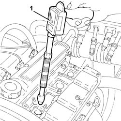
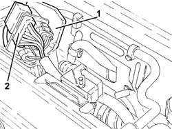
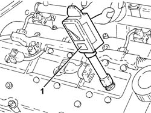
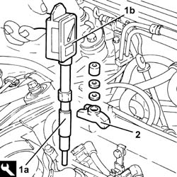

0510A10 cylinder compression - check for loose spark plugs or injectors
- Path
- Procedures > 05 DIAGNOSTICS > 0510 VARIOUS CONTROLS > 0510A checks on engine > 0510A10 cylinder compression - check for loose spark plugs or injectors
- Kind
- repair procedure (removal / refitting; the operation number is the code)
- Applies to
- all engines; all production periods
- Interactive page
- https://sloeber94.github.io/elrnDB-a147/en/#/3024737
Applies to: engines: 1.6 TS, 2.0 TS; all production periods
Disconnect the electrical connections from the engine management control unit 1056B82 injection/ignition system e.c.u. (one) - r + r .
1. Insert the test instrument into the seat of a 'central' spark plug.
Via the starter motor, make the engine execute a few revolutions while holding down the accelerator and clutch pedal.
Repeat the test on the remaining cylinders, making sure each time to reset the instrument's pen point.
Check that the cylinders' pressure readings do not differ excessively.

Applies to: engines: 1.6 TS, 2.0 TS; all production periods
Connect the electrical connections to the engine management control unit. 1056B82 injection/ignition system e.c.u. (one) - r + r
Applies to: engines: 3.2 V6; all production periods
1. Open the electrical connections box cover.
2. Disconnect the engine coupling.

Applies to: engines: 3.2 V6; all production periods
1. Insert the test instrument into the seat of a spark plug.
Via the starter motor, make the engine execute a few revolutions while holding down the accelerator and clutch pedal.
Repeat the test on the remaining cylinders, making sure each time to reset the instrument's pen point.
Check that the cylinders' pressure readings do not differ excessively.

Applies to: engines: 3.2 V6; all production periods
Connect the engine junction.
Close the electrical connections box cover.
Applies to: engines: 1.9 JTD 8V, 1.9 JTD 16V; all production periods
Disconnect the electrical connections from the engine management control unit 1060G80 ds electric injection control unit - r r .
1. Fit the tool (1a) on the test instrument (1b).
 | Name | Country |
|---|---|---|
1a | Dummy injector | 1.870.683.000 |
2. Insert the test instrument into the fuel injector seat and lock it with its brackets.
Via the starter motor, make the engine execute a few revolutions while holding down the accelerator and clutch pedal.
Repeat the test on the remaining cylinders, making sure each time to reset the instrument's pen point.
Check that the cylinders' pressure readings do not differ excessively.

Applies to: engines: 1.9 JTD 8V, 1.9 JTD 16V; all production periods
Connect the electrical connection to the engine management control unit 1060G80 ds electric injection control unit - r r .[PA1]
Topics linked from this page (2)
- 1056B82 injection/ignition system e.c.u. (one) - r + r
- 1060G80 ds electric injection control unit - r r